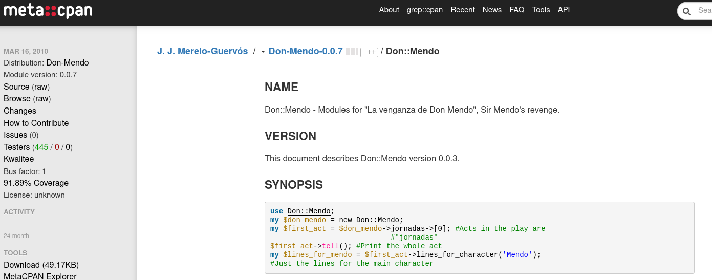
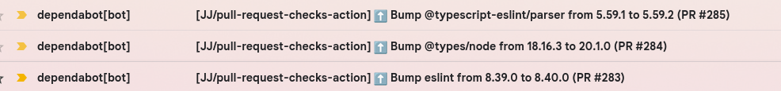

Como no dejar de rascarse el picor
En 10 cómodos pasos
Todo buen trabajo empieza cuando uno tiene que rascarse su propia comezón.
Eric Raymond, “La catedral y el bazar”
Y no termina cuando uno
encuentra trabajo
Sobre todo si te ha ayudado a
conseguirlo
Aquí estamos
Y así sigue...
¿De qué estamos hablando?
Bibliotecas/aplicaciones
CLI
Plantillas de
repositorios
Imágenes de contenedores
Workflows de CI
① ¿Cómo cuanto te pica?

② Haz que nazca libre
③ Organízate ágilmente
④ Si no hay test, no funciona
⑤ Usa repos de módulos oficiales
⑥La comunidad siempre tiene razón
No olvides las dependencias
⑦ La seguridad es importante
Dependabot FTW

⑧
Realiza una "limpieza de primavera"
⑨ Documenta como si no hubiera mañana
➉ Considera el bus factor
Y deja que el autobús lo conduzca
otra persona cuando no puedas continuar
Libera ahora, ráscate esa picazón
Y sigue solucionando y
aprendiendo
Sólo ha sido una excusa para hablar
de Venecia
Y para enseñaros las fotos
¡Gracias!